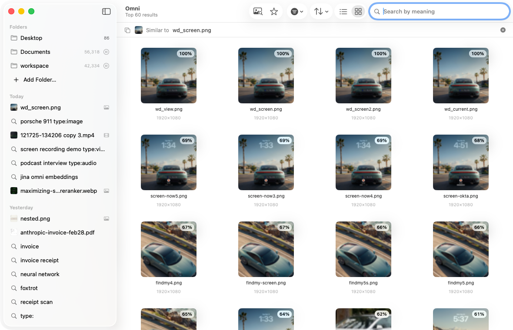
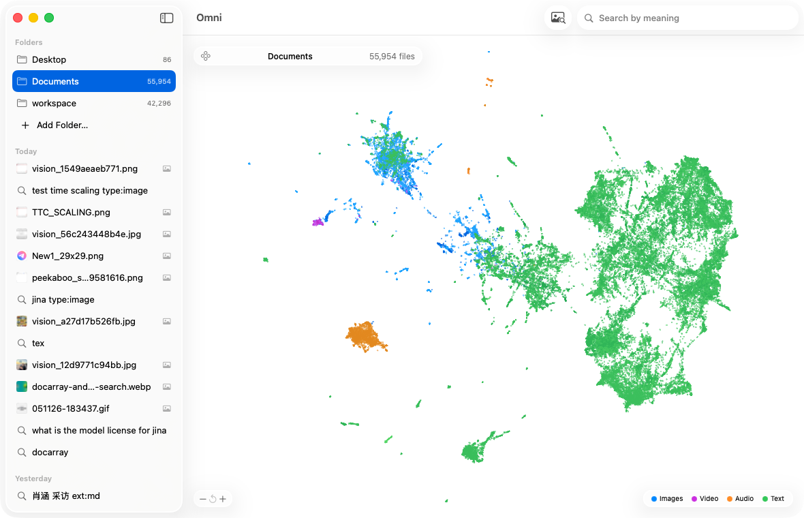
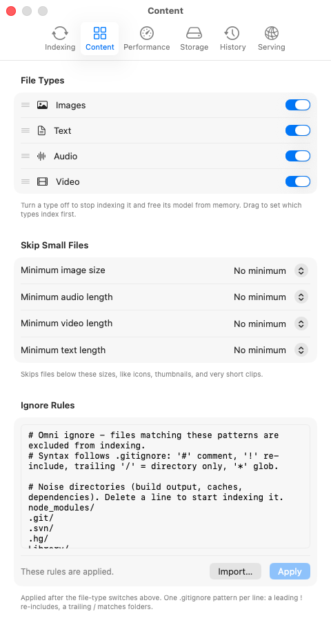
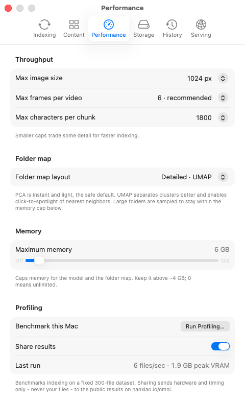
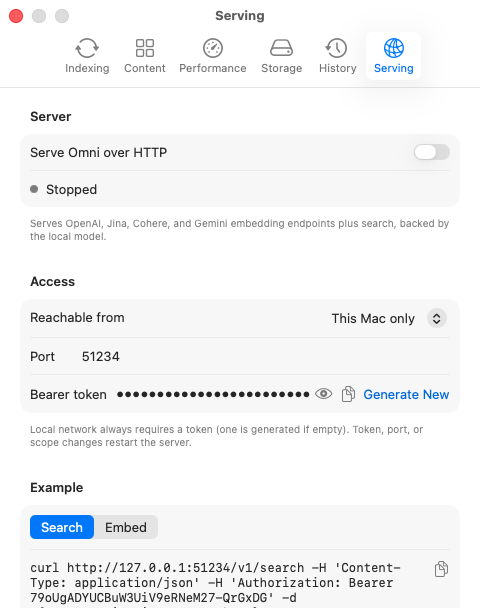
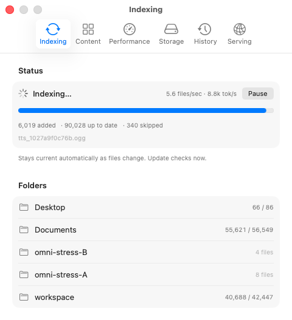
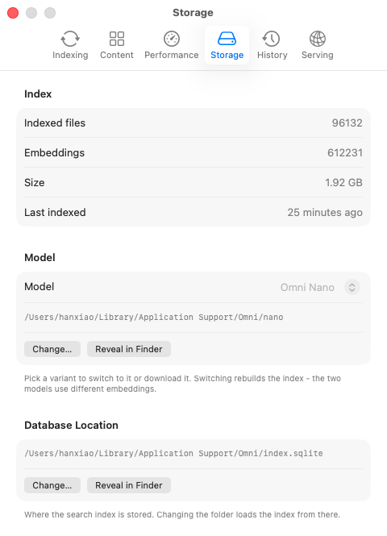

Any language
Search in English, match notes in German, Chinese, or Japanese - queries and files meet by meaning, not by keyword, scanned pages included.

Text, code, PDFs, images, audio, and video - in any language, entirely on-device. Download the model once, then run fully offline.
Apple silicon · macOS 14+ · MD5 abbe3c935628432bff855b9d013837c6
Features
Search in English, match notes in German, Chinese, or Japanese - queries and files meet by meaning, not by keyword, scanned pages included.
Every file becomes a dot, clustered by similarity and colored by type. Click a dot to spotlight its nearest neighbors - duplicates, drafts, and forgotten corners stand out at a glance.
A native MLX-Swift port of jina-embeddings-v5-omni runs in-process on the GPU - tens of thousands of tokens per second on recent chips, measured in the open rather than claimed.
List and Gallery views, real QuickLook thumbnails, drag and drop, keyboard-first navigation, and filters by kind, folder, date, and score.
Private by design
The model download is the only time Omni touches the network. From then on your files, their embeddings, and every query stay on this Mac - pull the plug and search still works.
A look inside
Every file - image, audio, video, text - lands in one shared vector space, so a query is just another file. Drop in a photo to find related screenshots, a voice memo to surface where it came from, a PDF to pull up everything near it. Right-click any result and choose Find Similar, or drop a file onto the search. One model, one space, any direction.









Serving
Omni exposes its search over your indexed files as a local endpoint - loopback-only and token-guarded. Agents like Hermes and OpenClaw search the index you already built - on your machine, with no cloud round-trip.
Search endpoint
The same semantic search the app uses - how agents actually reach your files.
Embeddings · add-on
Raw vectors too, via OpenAI-, Jina-, Cohere-, and Gemini-compatible APIs.
Benchmark
Community benchmarks on a fixed 300-file dataset. One line per chip, one dot per Omni version - hover for details. Add your Mac: File → Run Profiling in the app.
Everything Omni does, and how. Click a question to expand.
Loading…